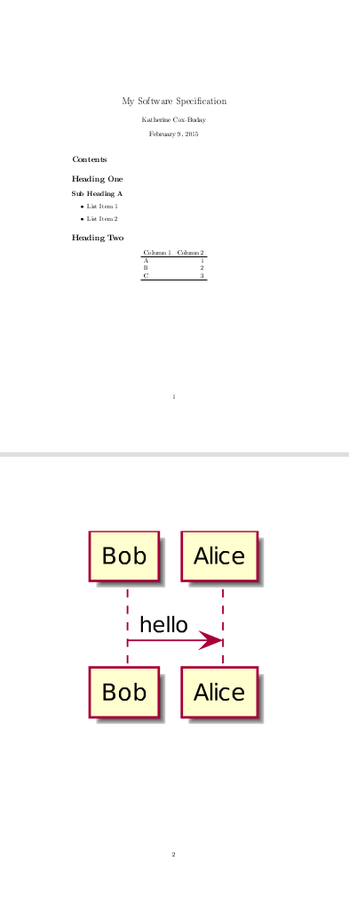
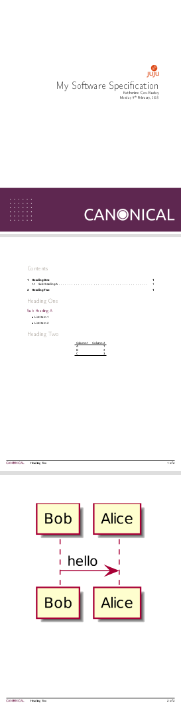

Writing Specs with Org-mode
Table of Contents
A lot of people have commented on the specifications I produce for the products I have worked on. I can't think of a humble way to say this, and I must make the point, so here it is: it is not uncommon for them to say that they are easy to read, clear, and more useful than most specifications they've read. Very often the next thing is a question: how'd you do that?
Core Ideas
Right off the bat, let's get one thing clear: content is paramount. You can spend a lot of time producing a beautiful document that is useless. Don't do that. The style should support the content, and help bring out the information. Having said that, after a little bit of setup, you can produce beautiful and useful documents in about as long as it takes you to form the ideas. I've tested this.
The key is that the entire spec will be written in plain-text with a bit of markup supported by the spec-editor. This allows you to stay agile, and stay focused on the content, not how your document looks.
After setting things up, you can have a nice specification that:
- Looks great, and includes example diagrams.
- Is easy to update.
- Automatically generates code for developers to fill-out.
Number 3 is quite handy as the details form. You can be sure that the code always reflects the latest iteration of the specifications and vice-versa. This also saves lots of time since the code doesn't have to be written twice.
Drawbacks
Like anything, there are a few drawbacks.
- Collaboration.
If you expect others to edit this document, and they're not using an editor that understands Org-mode syntax, it can very quickly become too cumbersome to manually merge their changes into the "master" document. The alternative: to allow them to use any editor and conform to Org syntax isn't horrible by any stretch of the imagination – Org's syntax is incredibly sparse – but people who don't already know Org will probably be resistant. If collaboration for your team means multiple people editing the document – not just making comments – then this method might not be worth it.
- Perception
This is only an issue in some environments, but because the specifications you'll be producing are such high-quality, a perception can sneak in that the team is spending much too long creating them. This is a valid concern; some teams spend entirely too much time on their specs only to find out that the thing they've been designing needs to go in a different direction. This is why the speed of this technique is so crucial. Usually this concern can be addressed with a bit of education (send them here!)
The Tools
- Emacs
Editor choice can be a contentious topic, but because Emacs provides the best support for Org-mode, it's what I would use. For this article's purposes, you could replace the word Emacs with "Specification Creator". I will be providing a config file that will make Emacs operate like a notepad-clone with a few cool Org-mode tricks. Basically, you can pretend this is just a text editor, not a general-purpose editor choice. Open it, work on your spec, and then go back to your editor of choice for the rest of your work.
I should note that if you use Emacs as your editor for programming as well, things will move even faster, but this is by no means a requisite for this system.
- Org-mode
Plug-in for Emacs. Although Org-mode can do many things, for this article, we're only interested in it's document creation and export functionality. The most important property of Org-mode is that it's plain-text.
- Plant UML
If you don't plan on making UML diagrams, you don't need this. Plain-text based UML diagraming tool used to produce most diagrams. Sparse syntax.
- LaTeX
This is only part of the stack because this is what we'll tell Org-mode to export in order to receive PDF's. If you don't want to, you won't have to deal with LaTeX at all. In fact, I'm going to omit any custom styling in this tutorial for the sake of simplicity.
The Work flow
One-time Setup
When you start, you'll have to set up a few things, namely the specification editor and optionally a LaTeX style-sheet to stylize your documents. However, after this is done, you'll only have to revisit it if you wish to change the style. After the initial setup, your documents just fall out as you type.
Installing the Tools
- Install Emacs
- Install LaTeX
- Install Plant UML
You must have Java installed to use Plant UML. Grab the latest version of the .jar file and put it in your path.
- Copy this Emacs config-file
You can either place it in ~/.emacs, or alternatively run emacs as such:
emacs --no-init-file --load ./spec-cfg.el
This is a simple config-file aimed at people who are unfamiliar with Emacs and don't care to be. It will automatically install all required packages, and place the user in an editor with CUA key-bindings.
Those already utilizing Emacs should strip out the requisite pieces and place them into their own config file.
1: (require 'package) 2: 3: ;; Install requisite packages 4: ;; 5: ;; 6: 7: (add-to-list 'package-archives '("org" . "http://orgmode.org/elpa/") t) 8: (package-initialize) 9: (when (not package-archive-contents) 10: (package-refresh-contents)) 11: 12: (mapcar #'(lambda (package) (unless (package-installed-p package) (package-install package))) 13: '(org-plus-contrib plantuml-mode)) 14: 15: ;; Set up plantuml. 16: ;; 17: ;; 18: 19: (org-babel-do-load-languages 20: 'org-babel-load-languages 21: '((plantuml . t))) 22: 23: (setq org-plantuml-jar-path 24: (setq plantuml-jar-path (expand-file-name "./plantuml.jar"))) 25: 26: ;; Setup latex exporting 27: ;; 28: ;; 29: 30: (unless (boundp 'org-latex-classes) 31: (setq org-latex-classes nil)) 32: 33: (add-to-list 'org-latex-classes 34: '("my-style" 35: "\\documentclass{./my-style} 36: [DEFAULT-PACKAGES] 37: [PACKAGES] 38: [EXTRA]" 39: ("\\section{%s}" . "\\section{%s}") 40: ("\\subsection{%s}" . "\\subsection{%s}") 41: ("\\subsubsection{%s}" . "\\subsubsection{%s}") 42: ("\\paragraph{%s}" . "\\paragraph{%s}") 43: ("\\subparagraph{%s}" . "\\subparagraph{%s}"))) 44: 45: ;; Switch into CUA mode for those not familar with emacs keybindings. 46: ;; 47: ;; 48: 49: (cua-mode)
Create Your Style
If you wanted to, you could skip the section and just utilize LaTeX's very sensible default style. Your document won't look quite as pretty, but all of your documents will be well-formed, readable, and consistent.
In the config-file, we let Org-mode know about the my-style style located in the local-directory. If you wanted to add additional styles, you would just repeat lines 33-43 for each additional style.
For the sake of brevity I'm going to skip any walkthrough on creating a LaTeX stylesheet. There are pleanty of resources for this elsewhere.
Creating Documents
Once you have everything set up, things become very easy. The only thing you truly need is a few headers:
#+TITLE: My Software Specification #+AUTHOR: Katherine Cox-Buday #+LaTeX_CLASS: my-style
That's it. After this, it's all content – and it's all in plain text. So here's what a small document might look like:
#+TITLE: My Software Specification #+AUTHOR: Katherine Cox-Buday #+LaTeX_CLASS: my-style * Heading One ** Sub Heading A - List Item 1 - List Item 2 * Heading Two | Column 1 | Column 2 | |----------+----------| | A | 1 | | B | 2 | | C | 3 | |----------+----------|
PlantUML
As stated above, PlantUML isn't necessary if you don't plan on including any UML diagrams. If you would like to include some diagrams, you will be taking advantage of Org-Mode's source-code block features.
To open a source-code block, enter the following:
#+BEGIN_SRC plantuml #+END_SRC
Then place the cursor in between the opening and closing blocks and navigate to the menu bar. Click on "Org > Editing > Edit Source Example."
This will open a new buffer in emacs where you can type in PlantUML code – and because you told Org that this was going to be PlantUML code – you have all the features you'd expect from emacs when editing a PlantUML file. In fact, this works with almost any language.
Exporting
To further expand our example above, the document might look like this:
#+TITLE: My Software Specification #+AUTHOR: Katherine Cox-Buday #+LaTeX_CLASS: my-style #+TITLE: My Software Specification #+AUTHOR: Katherine Cox-Buday #+LaTeX_CLASS: my-style * Heading One ** Sub Heading A - List Item 1 - List Item 2 * Heading Two | Column 1 | Column 2 | |----------+----------| | A | 1 | | B | 2 | | C | 3 | |----------+----------| #+BEGIN_SRC plantuml Bob->Alice : hello #+END_SRC
To export this, navigate to the menu-bar and click on the "Org > Export/Publish" menu. You'll see a menu come up with a lot of options, and the hot-keys in square brackets. Since we're producing PDFs, you would strike "l" for "Export to LaTeX" and then "o" for "As PDF file and open". The final result would look like this:

Figure 1: An Unstyled Document

Figure 2: A Styled Document
Not bad for a few lines of plain text, right? In the second example, we can see a nice title page, an auto-generated table-of-contents, page numbers, and descriptive footers. Here, LaTeX is doing the heavy lifting, and all we've done is write some plaint text. This is the essence of how we can turn out beautiful, useful documents so quickly: we spend all of our time focusing on the ideas and not the layout or style.
Exporting Artifacts
I'm only going to touch on this since it's slightly more advanced, but since it's a feature I use in my documents, I thought I'd at least mention it.
The source blocks we mentioned earlier are very powerful. Not only can Org mode export the results of running the code they contain, Org mode can save – or "tangle" – this code to files. In this manner, we can perhaps write code interfaces we expect the code we're describing to conform to, and then "tangle" these interfaces to the actual code-base and begin coding off of them. If the interfaces need to change, we change the specification and regenerate the files. In this way, the specification and codebase are never out of sync – something that is frequently a problem with these types of documents.
To take advantage of this, all you have to do is specify a code block as such:
#+BEGIN_SRC java :noweb tangle :tangle ~/code/interfaces.java #+END_SRC
The "noweb" option tells Org mode to tangle the file, and the "tangle" option tells it where to place the file.
Now type:
M-x org-babel-tangle
Your code should now be sitting in the directory you specified!